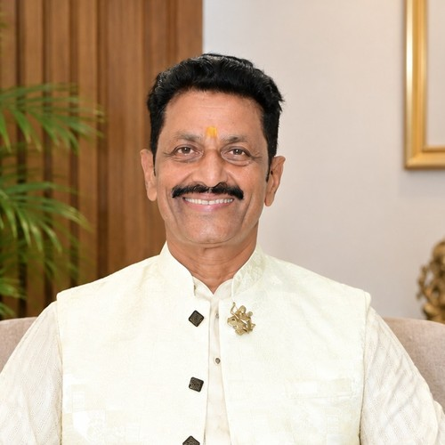

योगी दिनेश जिंदल जी आर्ट ऑफ लिविंग के वरिष्ठ शिक्षक हैं, जिन्होंने अपना जीवन समाज के आध्यात्मिक एवं मानसिक उत्थान के लिए समर्पित कर दिया है। वर्षों की साधना और सेवा से उन्होंने ध्यान और योग की गहराई में प्रवेश किया, और आज वे हैप्पीनेस प्रोग्राम, सहज समाधि ध्यान योग, VTP और श्री श्री योग जैसे कार्यक्रमों के माध्यम से हजारों लोगों को भीतर की शांति की ओर मार्गदर्शन दे चुके हैं।
उनका मानना है कि सच्ची सफलता बाहरी उपलब्धियों से नहीं, बल्कि मन की स्थिरता और आत्मा की शांति से मिलती है। तीन बार श्री अमरनाथ यात्रा और एक बार कैलाश मानसरोवर की पैदल यात्रा उनकी इसी आंतरिक साधना और श्रद्धा की परिचायक है।
एक जीवन प्रशिक्षक और मार्गदर्शक के रूप में, योगी जी क्रोध प्रबंधन, भय से मुक्ति, मानवीय संबंधों और जीवन में आने वाली चुनौतियों का सामना करने जैसे विषयों पर लोगों का मार्गदर्शन करते हैं। बहुत से लोग केवल आधे घंटे की बातचीत में ही अपनी उलझनों का समाधान पा लेते हैं और भीतर की शांति की ओर पहला कदम रखते हैं।